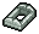
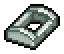
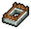
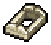
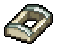
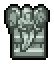
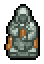
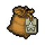
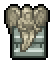
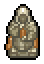

Spiritualism (Tech Tree)
| This article is a stub. You can help Graveyard Keeper Wiki by expanding it. |
This technology tree deals primarily with soul related products and it is part of the Better Save Soul DLC. This branch is unlocked by first talking to Smiler.
| Technology | Prerequisite tech | Cost | Unlocks | |
|---|---|---|---|---|
| Beginner healer | None | Talk to Smiler | Blueprint: Soul container I | |
| Blueprint: Organ Workbench | ||||
| Healer enthusiast | Beginner healer | Blueprint: Extension: Healing from pride See Soul healer | ||
| Create: Remote Craft Control | ||||
| Stone grave fence | Healer enthusiast |  |
Create: Stone grave fence VI | |
 |
Create: Stone grave fence VII | |||
 |
Create: Stone grave fence VIII | |||
| Prays for souls | Create: Prayer for souls' repose | |||
| Create: Prayer for souls' contentment | ||||
| Create: Prayer for souls' thorough cleansing | ||||
| Updated Equipment | Blueprint: Soul container II | |||
| Blueprint: Soul extractor II | ||||
| Useful equipment | Blueprint: Wall Crematorium | |||
| Blueprint: Soul receiver | ||||
| Marble grave fence | Stone grave fence |  |
Create: Marble grave fence VI | |
 |
Create: Marble grave fence VII | |||
| Create: Marble grave fence VIII | ||||
| Experienced healer | Updated equipment | Blueprint: Extension: healing from wrath See Soul healer | ||
| Blueprint: Extension: healing from gluttony See Soul healer | ||||
| Stone Gravestones | Experienced healer |  |
Create: Stone sculpture V | |
 |
Create: Stone sculpture VI | |||
| Exquisite writing | Create: Story | |||

|
Create: Chapter | |||

|
Create: Book | |||
| Updated Equipment II | Blueprint: Soul container III (Base) | |||

|
Blueprint: Soul extractor III | |||
| Simplified Farming | Create: Boost fertilizer I | |||
 |
Create: Quality fertilizer I | |||
| Marble Gravestones | Stone Gravestones |  |
Marble sculpture V | |
 |
Marble sculpture VI | |||
| Professional healer | Updated equipment II | Blueprint: Extension: healing from sloth See Soul healer | ||
| Blueprint: Extension: healing from lust See Soul healer | ||||
| Blueprint: Extension: healing from envy See Soul healer | ||||